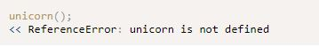
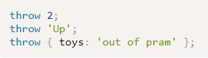
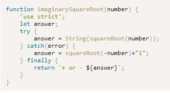
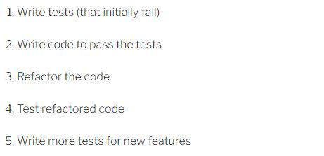

Exception: an error that produces a return value that can then be used by the program to deal with the error.

Strict Mode: writing code in this will help reduce errors, just type 'use strict'at the top of the js file. Javascript modules already implement this and you do not need to add it to the file.
Alert: this is the most basic form of debugginh, alert(). This will stop a program from running until the 'ok' is clicked.
Console: console.log()
Remove Debudding Code: remember to remove debugging code prior to shipping
Error object: can be created by the host environment when an exception occurs, or it can be created in the code using a constructor function
Throw error: use 'throw' to cause the program to hault. Examples:

Try, Catch, Finally
Try block: this will run the code inside the block as normal, but if an exception occurs it will pass the error object to the catch block.
Catch block: this recieves errors thrown by the try block. This only runs if an exception is thrown by the try block.
Finally block: this can be added after a catch block. This will always be executed after the try or catch block, regardless of whether an exception occurred or not.

Test-driven Develpment Workflow

Chapter Summary
Bugs are unavoidable in code, and it’s best to find them early rather than later.
JavaScript can be put into strict mode using the string "use strict" . This can be used in a whole file or just a single function.
Linting tools can be used to ensure your code follows good practice and conventions.
Feature detection can check whether a method is supported before calling it, helping to avoid an exception being thrown.
The console and browser’s built-in debugging tool can be used to interactively find and fix bugs in code.
Exceptions can be thrown using the throw statement.
An error object is created when an exception occurs.
Any code placed inside a try block will pass any error objects to a catch block when an exception occurs. Any code inside a finally block will run if an exception does or does not occur.
Test-driven development is the practice of writing tests that fail, then writing the code that passes the test, then refactoring the code every time a new feature is implemented.
Test-driven development is the practice of writing tests that fail, then writing the code that passes the test, then refactoring the code every time a new feature is implemented.